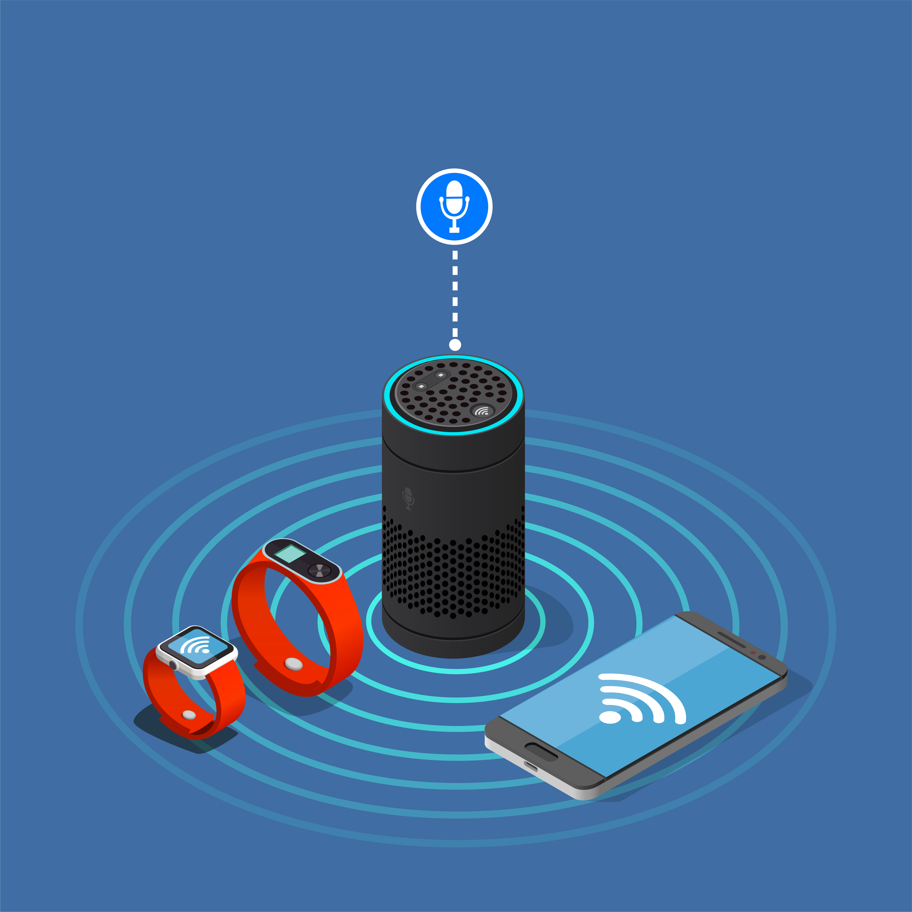
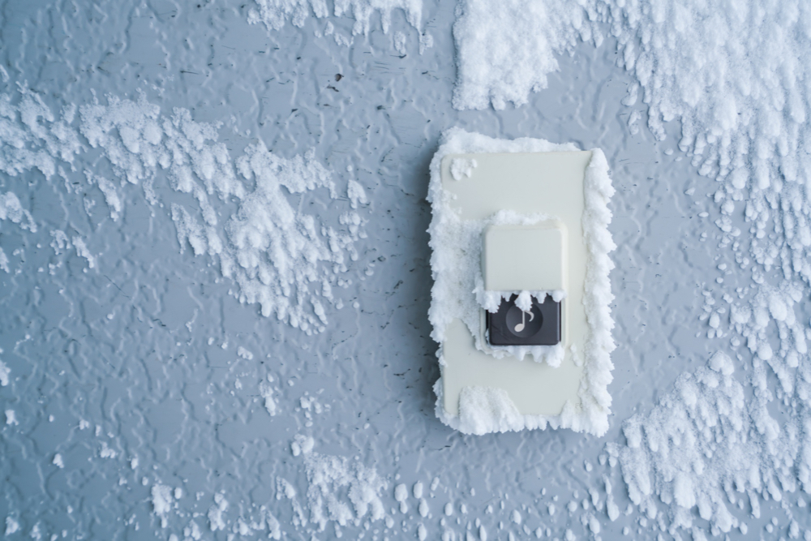

Amazon Echo
In 2013, Amazon bought a Polish company named Ivona Software. Using the wake word "Alexa", it allows this IoT device to perform over 90,000 fuctions with little to none physical interaction needed by the user. The echo is often referred as a hub because of its capbility to connect to other IoT devices and exchange data. 
Further information here
Ring Doorbell
Formerly known as DoorBot, Ring was purchased by Amazon in 2019. Ring has several products and services, but they are most known for their Ring doorbell. A doorbell with a built-in camera and microphone that has the capabliltiy to connect to your phone and give real-time updates of motion that occurs when its sensors are triggered. 
Further information here
Samsung Smart Fridge
Refrigerators are no longer just for storing groceries anymore. Smart fridges were first invented in the early 2000s,
but they have quickly progressed in advancements. With numerous built-in components,
these IoT devices are capable to stream videos, monitor information, and even see what is
being stored through the touch of a button.